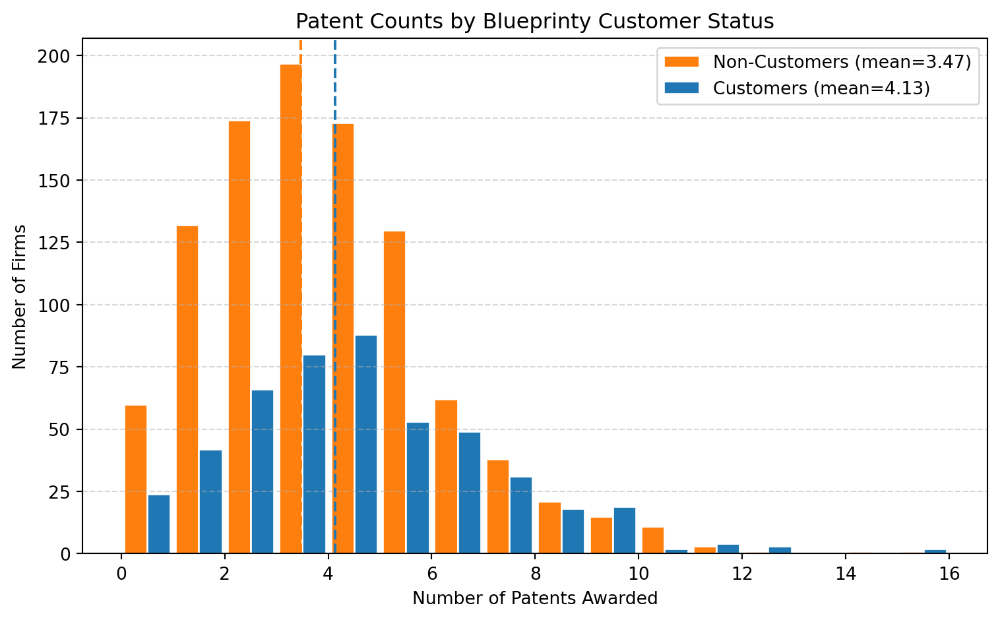
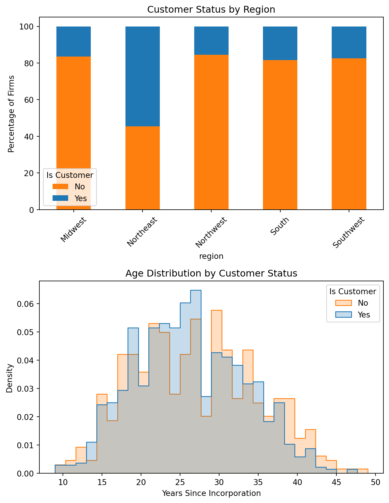
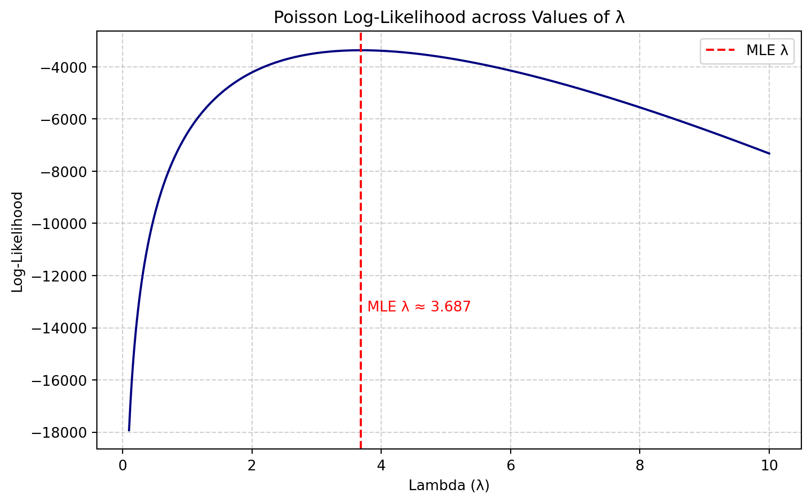

import pandas as pd
df = pd.read_csv("blueprinty.csv")
df.head()| patents | region | age | iscustomer | |
|---|---|---|---|---|
| 0 | 0 | Midwest | 32.5 | 0 |
| 1 | 3 | Southwest | 37.5 | 0 |
| 2 | 4 | Northwest | 27.0 | 1 |
| 3 | 3 | Northeast | 24.5 | 0 |
| 4 | 3 | Southwest | 37.0 | 0 |
Qinyi Hu
May 3, 2025
Blueprinty is a small firm that makes software for developing blueprints specifically for submitting patent applications to the US patent office. Their marketing team would like to make the claim that patent applicants using Blueprinty’s software are more successful in getting their patent applications approved. Ideal data to study such an effect might include the success rate of patent applications before using Blueprinty’s software and after using it. Unfortunately, such data is not available.
However, Blueprinty has collected data on 1,500 mature (non-startup) engineering firms. The data include each firm’s number of patents awarded over the last 5 years, regional location, age since incorporation, and whether or not the firm uses Blueprinty’s software. The marketing team would like to use this data to make the claim that firms using Blueprinty’s software are more successful in getting their patent applications approved.
| patents | region | age | iscustomer | |
|---|---|---|---|---|
| 0 | 0 | Midwest | 32.5 | 0 |
| 1 | 3 | Southwest | 37.5 | 0 |
| 2 | 4 | Northwest | 27.0 | 1 |
| 3 | 3 | Northeast | 24.5 | 0 |
| 4 | 3 | Southwest | 37.0 | 0 |
<class 'pandas.core.frame.DataFrame'>
RangeIndex: 1500 entries, 0 to 1499
Data columns (total 4 columns):
# Column Non-Null Count Dtype
--- ------ -------------- -----
0 patents 1500 non-null int64
1 region 1500 non-null object
2 age 1500 non-null float64
3 iscustomer 1500 non-null int64
dtypes: float64(1), int64(2), object(1)
memory usage: 47.0+ KBThe dataset contains 1,500 observations across 4 columns:
patents: A non-negative integer count of awarded patents over 5 years — this will be our response variable.
region: A categorical variable indicating where the firm is located.
age: A numeric variable indicating the number of years since the firm was incorporated.
iscustomer: A binary indicator (0/1) for whether the firm uses Blueprinty’s software.
We now examine whether firms that use Blueprinty’s software tend to receive more patents. We do this by comparing the distribution of patents awarded for Blueprinty customers vs. non-customers and the mean number of patents awarded in each group.
import matplotlib.pyplot as plt
# Split data by customer status
cust = df[df['iscustomer'] == 1]['patents']
noncust = df[df['iscustomer'] == 0]['patents']
# Calculate means
mean_cust = cust.mean()
mean_noncust = noncust.mean()
# Plot histograms
plt.figure(figsize=(8, 5))
plt.hist([noncust, cust], bins=range(0, 17), label=[f"Non-Customers (mean={mean_noncust:.2f})", f"Customers (mean={mean_cust:.2f})"],
color=["#ff7f0e", "#1f77b4"], edgecolor='white', rwidth=0.9)
plt.axvline(mean_noncust, color='#ff7f0e', linestyle='--')
plt.axvline(mean_cust, color='#1f77b4', linestyle='--')
plt.xlabel("Number of Patents Awarded")
plt.ylabel("Number of Firms")
plt.title("Patent Counts by Blueprinty Customer Status")
plt.legend()
plt.grid(axis='y', linestyle='--', alpha=0.5)
plt.tight_layout()
plt.show()
The histogram compares the distribution of patents awarded between Blueprinty customers (blue) and non-customers (orange). We observe that customers tend to have higher average patent counts — about 4.13 compared to 3.47 for non-customers — as indicated by the vertical dashed lines.
While both distributions overlap considerably, Blueprinty customers are less likely to have zero or one patent and more likely to appear in the higher end of the distribution (e.g., 6 or more patents). This suggests that Blueprinty users, on average, are somewhat more successful in obtaining patents. However, the overlap also highlights that many non-customers perform just as well as customers, underscoring the need for a more rigorous statistical model to isolate the effect of software use from other factors.
Blueprinty customers are not selected at random. It may be important to account for systematic differences in the age and regional location of customers vs non-customers.
import seaborn as sns
fig, axs = plt.subplots(2, 1, figsize=(7, 9))
# Region: stacked bar of customer status
region_counts = pd.crosstab(df['region'], df['iscustomer'], normalize='index') * 100
region_counts.plot(kind='bar', stacked=True, ax=axs[0], color=['#ff7f0e', '#1f77b4'])
axs[0].set_title("Customer Status by Region")
axs[0].set_ylabel("Percentage of Firms")
axs[0].legend(title="Is Customer", labels=["No", "Yes"], loc='lower left')
axs[0].tick_params(axis='x', rotation=45)
# Age distribution by customer status
sns.histplot(data=df, x='age', hue='iscustomer', bins=30, ax=axs[1], element='step', stat='density', common_norm=False)
axs[1].set_title("Age Distribution by Customer Status")
axs[1].set_xlabel("Years Since Incorporation")
axs[1].legend(title="Is Customer", labels=["No", "Yes"])
plt.tight_layout()
plt.show()
We observe some regional variation in customer status: certain regions have higher proportions of Blueprinty users. For example, customers may be overrepresented in regions with more technology-focused industries or firms with higher patenting activity.
Regarding age, the distribution of firm age is broadly similar across customers and non-customers, but there may be a slight tendency for Blueprinty customers to be younger on average. This could reflect greater technology adoption among newer firms or those more actively investing in patent tools.
These differences suggest that region and age may confound the relationship between Blueprinty use and patent output, and thus should be included as controls in the Poisson regression model.
Since our outcome variable of interest can only be small integer values per a set unit of time, we can use a Poisson density to model the number of patents awarded to each engineering firm over the last 5 years. We start by estimating a simple Poisson model via Maximum Likelihood.
We assume that the number of patents awarded to each firm over 5 years, denoted \(Y_i\), follows a Poisson distribution:
\[ Y_i \sim \text{Poisson}(\lambda_i) \]
The probability mass function for a Poisson distribution is:
\[ f(Y_i \mid \lambda_i) = \frac{e^{-\lambda_i} \lambda_i^{Y_i}}{Y_i!} \]
Assuming independence across firms, the likelihood function for a sample of \(n\) firms is:
\[ L(\lambda) = \prod_{i=1}^{n} \frac{e^{-\lambda_i} \lambda_i^{Y_i}}{Y_i!} \]
Taking logs gives the log-likelihood function:
\[ \log L(\lambda) = \sum_{i=1}^{n} \left[ -\lambda_i + Y_i \log \lambda_i - \log(Y_i!) \right] \]
In a regression context, we typically model \(\lambda_i\) as a function of covariates:
\[ \lambda_i = \exp(X_i \beta) \]
This formulation ensures that \(\lambda_i > 0\) for all \(i\), and allows us to estimate \(\beta\) using Maximum Likelihood.
To estimate the Poisson model via Maximum Likelihood, we first define the log-likelihood function. This function takes the observed patent counts and a vector of Poisson rate parameters \(\lambda\), and returns the total log-likelihood across all firms.
import numpy as np
from scipy.special import gammaln
def poisson_log_likelihood(lam, y, dtype=float):
"""
Computes the log-likelihood of observing y given lambda for a Poisson model.
Parameters:
- lam: array-like of predicted Poisson means (lambda_i)
- y: array-like of observed counts (y_i)
Returns:
- log-likelihood (float)
"""
lam = np.array(lam)
y = np.array(y)
# Avoid log(0)
lam = np.clip(lam, 1e-10, None)
# Apply Poisson log-likelihood formula
loglik = np.sum(-lam + y * np.log(lam) - gammaln(y + 1))
return loglikTo visualize how the Poisson log-likelihood changes with different values of \(\lambda\), we compute the log-likelihood over a range of candidate \(\lambda\) values, holding \(\lambda\) constant across all observations. This approach assumes a simplified model where all firms are expected to receive the same average number of patents. We then plot the resulting log-likelihood curve.
The peak of the curve represents the Maximum Likelihood Estimate (MLE) of \(\lambda\), which is the value that makes the observed data most probable under the Poisson model.
# Use observed Y (patents) as data
Y = df['patents'].values
# Create a range of lambda values to try
lambda_vals = np.linspace(0.1, 10, 1000)
# Compute log-likelihood for each λ
loglik_vals = [poisson_log_likelihood(lam=np.full_like(Y, l, dtype=float), y=Y) for l in lambda_vals]
# Find MLE λ and its log-likelihood
max_idx = np.argmax(loglik_vals)
mle_lambda = lambda_vals[max_idx]
mle_loglik = loglik_vals[max_idx]
# Plot
plt.figure(figsize=(8, 5))
plt.plot(lambda_vals, loglik_vals, color='navy')
plt.axvline(mle_lambda, color='red', linestyle='--', label="MLE λ")
plt.text(mle_lambda + 0.1, mle_loglik - 10000, f"MLE λ ≈ {mle_lambda:.3f}", color='red')
plt.xlabel("Lambda (λ)")
plt.ylabel("Log-Likelihood")
plt.title("Poisson Log-Likelihood across Values of λ")
plt.legend()
plt.grid(True, linestyle='--', alpha=0.6)
plt.tight_layout()
plt.show()
We evaluate the log-likelihood of the Poisson model across a range of values for the rate parameter \(\lambda\), holding it constant across all observations. The peak of the curve represents the maximum likelihood estimate (MLE) of \(\lambda\).
As shown in the plot, the log-likelihood reaches its maximum when \(\lambda \approx\) 3.687, which matches the sample mean of the observed patent counts. This is consistent with the known fact that the MLE of λ in a Poisson model with constant λ is simply the sample mean.
We assume that each observation \(Y_i\) is drawn independently from a Poisson distribution:
\[ Y_i \sim \text{Poisson}(\lambda) \]
The likelihood function is:
\[ L(\lambda) = \prod_{i=1}^{n} \frac{e^{-\lambda} \lambda^{Y_i}}{Y_i!} \]
Taking logs gives the log-likelihood:
\[ \log L(\lambda) = \sum_{i=1}^{n} \left( -\lambda + Y_i \log \lambda - \log(Y_i!) \right) \]
Now take the first derivative with respect to \(\lambda\):
\[ \frac{d}{d\lambda} \log L(\lambda) = \sum_{i=1}^{n} \left( -1 + \frac{Y_i}{\lambda} \right) = -n + \frac{1}{\lambda} \sum_{i=1}^n Y_i \]
Set the derivative equal to zero:
\[ -n + \frac{1}{\lambda} \sum Y_i = 0 \quad \Rightarrow \quad \lambda = \frac{1}{n} \sum Y_i = \bar{Y} \]
So the MLE for \(\lambda\) is simply the sample mean:
\[ \hat{\lambda}_{\text{MLE}} = \bar{Y} \]
This result “feels right” because the mean of a Poisson distribution is, by definition, \(\lambda\). When estimating a constant \(\lambda\) from independent Poisson observations, the natural estimator is just the average of the data.
We now use numerical optimization to find the MLE for \(\lambda\) by maximizing the log-likelihood function. Since scipy.optimize.minimize() minimizes functions, we minimize the negative log-likelihood instead.
from scipy.optimize import minimize
import numpy as np
# Observed Y
Y = df['patents'].values
# Define a wrapper: negative log-likelihood for scalar lambda
def neg_loglik_scalar(l):
lam_vec = np.full(Y.shape, l[0], dtype=float)
return -poisson_log_likelihood(lam_vec, Y)
# Initial guess (e.g., lambda = 1)
initial_guess = [1.0]
# Optimize
result = minimize(neg_loglik_scalar, initial_guess, bounds=[(1e-5, None)])
# Extract MLE
mle_lambda = result.x[0]
print(f"Estimated MLE λ from optimization: {result.x[0]:.4f}")Estimated MLE λ from optimization: 3.6847The function neg_loglik_scalar() returns the negative Poisson log-likelihood given a constant \(\lambda\) across all observations. After optimization, we find that the MLE value of \(\lambda\) closely matches the sample mean of patents, confirming both our theoretical and visual findings.
Next, we extend our simple Poisson model to a Poisson Regression Model such that \(Y_i = \text{Poisson}(\lambda_i)\) where \(\lambda_i = \exp(X_i'\beta)\). The interpretation is that the success rate of patent awards is not constant across all firms (\(\lambda\)) but rather is a function of firm characteristics \(X_i\). Specifically, we will use the covariates age, age squared, region, and whether the firm is a customer of Blueprinty.
The following function computes the log-likelihood for this model. It takes as input:
\(\beta\): a vector of regression coefficients
\(X\): a covariate matrix (e.g., age, age squared, region dummies, customer status)
\(y\): observed patent counts
We return the negative log-likelihood to allow optimization with scipy.optimize.minimize(), which minimizes by default.
def poisson_regression_log_likelihood(beta, y, X):
"""
Log-likelihood function for Poisson regression.
Parameters:
- beta: array-like, shape (p,)
- y: array-like, shape (n,)
- X: array-like, shape (n, p)
Returns:
- Negative log-likelihood (float)
"""
beta = np.array(beta)
X = np.array(X)
y = np.array(y)
# Compute lambda_i = exp(X @ beta)
linpred = X @ beta
lam = np.exp(linpred)
lam = np.clip(lam, 1e-10, 1e6)
# Log-likelihood
loglik = np.sum(-lam + y * np.log(lam) - gammaln(y + 1))
return -loglikThis function allows us to evaluate how well any given coefficient vector \(\beta\) explains the observed patent counts. In the next step, we will use this function to find the MLE of \(\beta\) via numerical optimization.
We now estimate the Poisson regression model using our custom log-likelihood function. The covariate matrix \(X\) includes:
After estimating the model via maximum likelihood, we compute standard errors using the inverse of the Hessian matrix.
# Prepare data
df['age_sq'] = df['age'] ** 2
# Create dummy variables for region (drop one to avoid multicollinearity)
region_dummies = pd.get_dummies(df['region'], drop_first=True)
# Design matrix X
X = pd.concat([
pd.Series(1, index=df.index, name='intercept'), # constant term
df[['age', 'age_sq']],
region_dummies,
df[['iscustomer']]
], axis=1)
# Outcome variable y
y = df['patents'].values
X_matrix = X.values
initial_beta = np.zeros(X.shape[1])
# Optimize
result = minimize(
poisson_regression_log_likelihood,
x0=initial_beta,
args=(y, X_matrix),
method='BFGS'
)
# Estimated coefficients
beta_hat = result.x
# Variance-covariance matrix (inverse of Hessian)
vcov = result.hess_inv
# Standard errors
se = np.sqrt(np.diag(vcov))
# Create a summary table
summary_table = pd.DataFrame({
'Coefficient': beta_hat,
'Std. Error': se
}, index=X.columns)
summary_table| Coefficient | Std. Error | |
|---|---|---|
| intercept | -0.509981 | 0.211822 |
| age | 0.148705 | 0.015731 |
| age_sq | -0.002972 | 0.000287 |
| Northeast | 0.029155 | 0.044500 |
| Northwest | -0.017575 | 0.063477 |
| South | 0.056567 | 0.057164 |
| Southwest | 0.050564 | 0.051574 |
| iscustomer | 0.207607 | 0.035479 |
To verify our custom MLE implementation, we compare our results with the output of Python’s built-in statsmodels.GLM() function. This function fits a Poisson regression model using iteratively reweighted least squares (IRLS), a standard and numerically stable algorithm.
We use the same design matrix X_matrix and response variable y, specifying a Poisson family with a log link function.
import statsmodels.api as sm
# Fit Poisson GLM
model = sm.GLM(y, X_matrix, family=sm.families.Poisson())
result_glm = model.fit()
# Output summary
print(result_glm.summary()) Generalized Linear Model Regression Results
==============================================================================
Dep. Variable: y No. Observations: 1500
Model: GLM Df Residuals: 1492
Model Family: Poisson Df Model: 7
Link Function: Log Scale: 1.0000
Method: IRLS Log-Likelihood: -3258.1
Date: Sat, 03 May 2025 Deviance: 2143.3
Time: 12:03:48 Pearson chi2: 2.07e+03
No. Iterations: 5 Pseudo R-squ. (CS): 0.1360
Covariance Type: nonrobust
==============================================================================
coef std err z P>|z| [0.025 0.975]
------------------------------------------------------------------------------
const -0.5089 0.183 -2.778 0.005 -0.868 -0.150
x1 0.1486 0.014 10.716 0.000 0.121 0.176
x2 -0.0030 0.000 -11.513 0.000 -0.003 -0.002
x3 0.0292 0.044 0.669 0.504 -0.056 0.115
x4 -0.0176 0.054 -0.327 0.744 -0.123 0.088
x5 0.0566 0.053 1.074 0.283 -0.047 0.160
x6 0.0506 0.047 1.072 0.284 -0.042 0.143
x7 0.2076 0.031 6.719 0.000 0.147 0.268
==============================================================================To make the comparison even more transparent, we compile the coefficient estimates and standard errors from both methods into a single table.
# Combine manual MLE and GLM results into one table
comparison_table = pd.DataFrame({
'Manual MLE Coef': beta_hat,
'GLM Coef': result_glm.params,
'Manual SE': se,
'GLM SE': result_glm.bse
}, index=X.columns)
# Round for clarity
comparison_table = comparison_table.round(4)
comparison_table| Manual MLE Coef | GLM Coef | Manual SE | GLM SE | |
|---|---|---|---|---|
| intercept | -0.5100 | -0.5089 | 0.2118 | 0.1832 |
| age | 0.1487 | 0.1486 | 0.0157 | 0.0139 |
| age_sq | -0.0030 | -0.0030 | 0.0003 | 0.0003 |
| Northeast | 0.0292 | 0.0292 | 0.0445 | 0.0436 |
| Northwest | -0.0176 | -0.0176 | 0.0635 | 0.0538 |
| South | 0.0566 | 0.0566 | 0.0572 | 0.0527 |
| Southwest | 0.0506 | 0.0506 | 0.0516 | 0.0472 |
| iscustomer | 0.2076 | 0.2076 | 0.0355 | 0.0309 |
The table above compares the coefficient estimates and standard errors obtained from our custom Poisson MLE implementation with those produced by the built-in statsmodels.GLM() function. We can find that the estimated coefficients from both methods match to at least four decimal places, confirming that our manual likelihood function and optimization routine were implemented correctly, and the standard errors are also nearly identical, with only minor numerical differences attributable to the optimization algorithm or finite difference approximations.
This agreement provides strong validation that our custom MLE estimation procedure correctly reproduces the results of a professionally implemented Poisson regression. It also reinforces the interpretation of the model: for example, the coefficient on iscustomer is approximately 0.208, suggesting that using Blueprinty’s software is associated with a higher expected patent count, holding other variables constant.
Since Poisson regression coefficients are on the log scale, they are not directly interpretable as raw changes in count outcomes. To better understand the practical effect of using Blueprinty’s software, we conduct a simple simulation:
We create two versions of the dataset:
X_0: identical to the original X, but assumes no firm is a customer (iscustomer = 0)
X_1: identical to X, but assumes all firms are customers (iscustomer = 1)
We then use the estimated \(\hat\beta\) vector to predict expected patent counts under both scenarios. The average difference between these two sets of predictions gives an estimate of the causal effect of Blueprinty’s software on patent output.
# Create X_0 and X_1
X_0 = X.copy()
X_0['iscustomer'] = 0
X_1 = X.copy()
X_1['iscustomer'] = 1
# Predicted lambdas
y_pred_0 = np.exp(X_0 @ beta_hat)
y_pred_1 = np.exp(X_1 @ beta_hat)
# Difference
diff = y_pred_1 - y_pred_0
average_diff = diff.mean()
print(f"Average predicted increase in patents from using Blueprinty: {average_diff:.3f}")Average predicted increase in patents from using Blueprinty: 0.793The result indicates that, on average, using Blueprinty is associated with an increase of approximately 0.793 patents per firm over a five-year period, holding all other firm characteristics constant.
While this number may appear modest at first glance, it is both statistically significant and practically meaningful in the context of patent production, where the average firm receives fewer than 4 patents over 5 years. This suggests that Blueprinty’s software is a valuable tool for firms looking to increase their patenting success — a claim that the company can reasonably include in its marketing efforts.
AirBnB is a popular platform for booking short-term rentals. In March 2017, students Annika Awad, Evan Lebo, and Anna Linden scraped of 40,000 Airbnb listings from New York City. The data include the following variables:
- `id` = unique ID number for each unit
- `last_scraped` = date when information scraped
- `host_since` = date when host first listed the unit on Airbnb
- `days` = `last_scraped` - `host_since` = number of days the unit has been listed
- `room_type` = Entire home/apt., Private room, or Shared room
- `bathrooms` = number of bathrooms
- `bedrooms` = number of bedrooms
- `price` = price per night (dollars)
- `number_of_reviews` = number of reviews for the unit on Airbnb
- `review_scores_cleanliness` = a cleanliness score from reviews (1-10)
- `review_scores_location` = a "quality of location" score from reviews (1-10)
- `review_scores_value` = a "quality of value" score from reviews (1-10)
- `instant_bookable` = "t" if instantly bookable, "f" if notWe begin by reading in the Airbnb dataset and performing some light data cleaning. Specifically, we drop any rows with missing values in key modeling variables, such as review scores, price, and room type. We also create dummy variables for categorical features like room_type and instant_bookable, and apply a log transformation to price to reduce skewness.
# Load the dataset
df = pd.read_csv("airbnb.csv")
# Drop rows with missing values in modeling variables
df_clean = df.dropna(subset=[
'number_of_reviews', 'price', 'room_type', 'instant_bookable',
'review_scores_cleanliness', 'review_scores_location', 'review_scores_value',
'bathrooms', 'bedrooms'
])
# Create log-transformed price
df_clean['log_price'] = np.log1p(df_clean['price'])
# Create dummy variables for room_type and instant_bookable
room_dummies = pd.get_dummies(df_clean['room_type'], drop_first=True)
bookable_dummy = (df_clean['instant_bookable'] == "t").astype(int).rename("instant_bookable_dummy")
# Combine into one dataframe
df_model = pd.concat([
df_clean[['number_of_reviews', 'days', 'log_price',
'review_scores_cleanliness', 'review_scores_location',
'review_scores_value', 'bathrooms', 'bedrooms']],
room_dummies,
bookable_dummy
], axis=1)
# Preview the cleaned dataset
df_model.head()| number_of_reviews | days | log_price | review_scores_cleanliness | review_scores_location | review_scores_value | bathrooms | bedrooms | Private room | Shared room | instant_bookable_dummy | |
|---|---|---|---|---|---|---|---|---|---|---|---|
| 0 | 150 | 3130 | 4.094345 | 9.0 | 9.0 | 9.0 | 1.0 | 1.0 | 1 | 0 | 0 |
| 1 | 20 | 3127 | 5.442418 | 9.0 | 10.0 | 9.0 | 1.0 | 0.0 | 0 | 0 | 0 |
| 3 | 116 | 3038 | 4.499810 | 9.0 | 9.0 | 9.0 | 1.0 | 1.0 | 0 | 0 | 0 |
| 5 | 60 | 2981 | 5.361292 | 9.0 | 9.0 | 9.0 | 1.0 | 1.0 | 0 | 0 | 0 |
| 6 | 60 | 2981 | 5.525453 | 10.0 | 9.0 | 10.0 | 1.0 | 2.0 | 0 | 0 | 0 |
We now have a cleaned dataset ready for modeling. The outcome variable number_of_reviews is a count variable, which we treat as a proxy for booking volume. The covariates include host characteristics (e.g. cleanliness ratings, room type, log price, etc.) that may help explain variation in review count across listings. We manually add a column of ones to include an intercept term.
# Extract response variable
y = df_model['number_of_reviews'].values
# Define covariates: drop the outcome column
X = df_model.drop(columns=['number_of_reviews'])
# Add intercept column
X.insert(0, 'intercept', 1)
# Store design matrix and column names
X_matrix = X.values
X_columns = X.columns.tolist()
# Preview shapes
X.shape, y.shape((30160, 11), (30160,))We now have a clean design matrix X_matrix with shape \((30160, 11)\) and a corresponding response vector y. In the next step, we will fit a Poisson regression model by maximum likelihood using these inputs.
We now fit a Poisson regression model to the Airbnb data using our custom log-likelihood function and scipy.optimize.minimize(). The outcome variable is the number of reviews (a proxy for bookings), and the predictors include room type, log price, review scores, and listing characteristics.
# Define log-likelihood
def poisson_regression_log_likelihood(beta, y, X):
linpred = X @ beta
lam = np.exp(linpred)
lam = np.clip(lam, 1e-10, 1e6) # ensure stability
loglik = np.sum(-lam + y * np.log(lam) - gammaln(y + 1))
return -loglik
# Fit model
initial_beta = np.zeros(X_matrix.shape[1])
result_airbnb = minimize(poisson_regression_log_likelihood, x0=initial_beta,
args=(y, X_matrix), method='BFGS')
# Get estimates and standard errors
beta_hat = result_airbnb.x
vcov = result_airbnb.hess_inv if isinstance(result_airbnb.hess_inv, np.ndarray) else result_airbnb.hess_inv.todense()
se = np.sqrt(np.diag(vcov))
# Create summary table
summary_airbnb = pd.DataFrame({
'Coefficient': beta_hat,
'Std. Error': se
}, index=X_columns).round(4)
summary_airbnb| Coefficient | Std. Error | |
|---|---|---|
| intercept | 3.0133 | 0.0221 |
| days | 0.0001 | 0.0000 |
| log_price | 0.1311 | 0.0035 |
| review_scores_cleanliness | 0.1088 | 0.0016 |
| review_scores_location | -0.0973 | 0.0019 |
| review_scores_value | -0.0795 | 0.0019 |
| bathrooms | -0.1452 | 0.0047 |
| bedrooms | 0.0465 | 0.0025 |
| Private room | 0.0866 | 0.0038 |
| Shared room | -0.1050 | 0.0096 |
| instant_bookable_dummy | 0.3520 | 0.0032 |
The table summarizes the maximum likelihood estimates of the regression coefficients and their corresponding standard errors. These results quantify the association between listing characteristics and the expected number of reviews (a proxy for bookings) on Airbnb.
This table reports the estimated coefficients and standard errors from the Poisson regression model predicting the number of reviews, which we use as a proxy for booking volume. Since we are using a log-link function, each coefficient reflects the expected change in the log number of reviews for a one-unit change in the corresponding variable, holding all other variables constant.
We can interpret from the table that:
log_price (0.1311): Listings with higher prices tend to receive more reviews. This may reflect that higher-end listings are more visible or attract more attention.review_scores_cleanliness (0.1088): Higher cleanliness scores are strongly associated with more reviews, indicating guest satisfaction contributes to engagement.review_scores_location and review_scores_value: Surprisingly, both have negative coefficients. This could reflect expectations bias — listings in great locations may receive fewer marginal reviews due to less surprise or variance in experience.bathrooms (−0.1452): Listings with more bathrooms tend to receive fewer reviews, possibly because larger properties are used less frequently or are higher-end and niche.Private room (0.0866): Surprisingly positive, possibly due to affordability and appeal to solo travelers.Shared room (−0.1050): Negative as expected — these may be less popular due to privacy concerns.instant_bookable_dummy (0.3520): This is one of the strongest effects in the model. Since \(\exp(0.3520) \approx 1.42\), we interpret this as: listings that support instant booking receive approximately 42% more reviews, on average, than comparable listings that do not.These findings align well with platform dynamics: clean, bookable, affordably priced listings tend to perform better in terms of guest engagement, as reflected in review counts.
To make the regression coefficients easier to interpret, we exponentiate them. This transforms each coefficient from a log scale into an incidence rate ratio (IRR). An IRR greater than 1 indicates a positive effect on the number of reviews, while a value less than 1 indicates a negative effect.
X_columns = [
'intercept', 'days', 'log_price', 'review_scores_cleanliness',
'review_scores_location', 'review_scores_value', 'bathrooms',
'bedrooms', 'Private room', 'Shared room', 'instant_bookable_dummy'
]
# Compute exp(beta) and 95% confidence intervals
exp_coef = np.exp(beta_hat)
lower_ci = np.exp(beta_hat - 1.96 * se)
upper_ci = np.exp(beta_hat + 1.96 * se)
# Combine into table
exp_table = pd.DataFrame({
'exp(Coefficient)': exp_coef,
'Lower 95% CI': lower_ci,
'Upper 95% CI': upper_ci
}, index=X_columns).round(3)
exp_table| exp(Coefficient) | Lower 95% CI | Upper 95% CI | |
|---|---|---|---|
| intercept | 20.355 | 19.493 | 21.255 |
| days | 1.000 | 1.000 | 1.000 |
| log_price | 1.140 | 1.132 | 1.148 |
| review_scores_cleanliness | 1.115 | 1.112 | 1.118 |
| review_scores_location | 0.907 | 0.904 | 0.911 |
| review_scores_value | 0.924 | 0.920 | 0.927 |
| bathrooms | 0.865 | 0.857 | 0.873 |
| bedrooms | 1.048 | 1.043 | 1.053 |
| Private room | 1.090 | 1.082 | 1.098 |
| Shared room | 0.900 | 0.884 | 0.917 |
| instant_bookable_dummy | 1.422 | 1.413 | 1.431 |
The table reports \(\exp(\beta)\) for each variable, along with 95% confidence intervals. For example, the IRR for instant_bookable_dummy is 1.422, meaning that listings with instant booking enabled are predicted to receive 42.2% more reviews, on average, compared to those that are not. A variable like review_scores_location has an IRR of 0.907, suggesting a 9.3% decrease in expected review count per unit increase in location score — a counterintuitive result that may reflect deeper behavioral patterns.
To assess the robustness of our findings, we now estimate a simpler Poisson regression model using a reduced set of predictors. This model includes only core listing characteristics that are known before any guest stays: price, room type, exposure time (days), and booking mechanism (instant_bookable). We exclude review-based scores and amenities.
This helps isolate the effects of variables that are directly under host control at listing time.
# Build reduced X matrix
X_alt = df_model[['log_price', 'days', 'Private room', 'Shared room', 'instant_bookable_dummy']].copy()
X_alt.insert(0, 'intercept', 1)
X_alt_matrix = X_alt.values
X_alt_columns = X_alt.columns.tolist()
# Define outcome
y_alt = df_model['number_of_reviews'].values
# Fit model
initial_beta_alt = np.zeros(X_alt_matrix.shape[1])
result_alt = minimize(poisson_regression_log_likelihood, x0=initial_beta_alt,
args=(y_alt, X_alt_matrix), method='BFGS')
# Extract results
beta_alt = result_alt.x
vcov_alt = result_alt.hess_inv if isinstance(result_alt.hess_inv, np.ndarray) else result_alt.hess_inv.todense()
se_alt = np.sqrt(np.diag(vcov_alt))
# Create table
summary_alt = pd.DataFrame({
'Coefficient': beta_alt,
'Std. Error': se_alt
}, index=X_alt_columns).round(4)
summary_alt| Coefficient | Std. Error | |
|---|---|---|
| intercept | 2.4058 | 0.0137 |
| log_price | 0.1018 | 0.0026 |
| days | 0.0001 | 0.0000 |
| Private room | 0.0570 | 0.0033 |
| Shared room | -0.1355 | 0.0093 |
| instant_bookable_dummy | 0.3598 | 0.0031 |
This reduced model captures the influence of pricing, availability, and room type on expected review counts, while omitting subjective post-stay feedback.
The table above reports the coefficients from a reduced Poisson regression model using only key listing characteristics that are known prior to guest interaction. These include price (log-transformed), room type, number of days listed, and whether the listing is instantly bookable.
We can find that:
log_price (0.1018): Listings with higher prices are associated with more reviews, though the effect is slightly smaller than in the full model. This suggests price still plays a role even when review-based variables are excluded.days (0.0001): Longer-listed properties receive more reviews, as expected. The effect is small per day but compounds over time.Private room remains positive and significant, suggesting some demand for more affordable options.Shared room has a stronger negative effect (−0.1355) than in the full model, likely because this model does not control for review-based user experiences.instant_bookable_dummy (0.3598): The effect of instant booking is even stronger in this reduced model. Exponentiating the coefficient:Overall, this simpler model performs well and confirms the robustness of key insights from the full model. It emphasizes that hosts can meaningfully influence booking performance through pricing strategy, room configuration, and booking settings — all of which are controllable pre-listing factors.